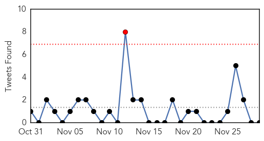
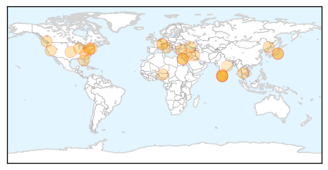

Mold/Fungal
30-Day Web Trend
8 alerts, 0 warnings
30-Day Twitter Trend
0 alerts, 0 warnings

Article Locations

Article Confidences

Top Articles:
-
No articles found for Nov 29, 2014
Top Tweets:
-
No tweets found for Nov 29, 2014
Unknown
30-Day Web Trend
1 alerts, 0 warnings
30-Day Twitter Trend
1 alerts, 0 warnings

Article Locations
Article Confidences

Top Articles:
- 0.984
- Bird flu symptoms not related to poultry products consumption
- 0.956
- Human swabs sent for tests
- 0.953
- The Powell River Peak > Archives > News > Briefly
- 0.917
- Chicago Tribune
- 0.917
- Chicago Tribune
- 0.917
- Chicago Tribune
- 0.917
- Chicago Tribune
- 0.917
- Chicago Tribune
- 0.917
- Chicago Tribune
- 0.917
- Chicago Tribune
- 0.917
- Chicago Tribune
- 0.917
- Chicago Tribune
- 0.883
- KRNV, Reno, NV
- 0.866
- Egyptian security forces fire tear gas and birdshot to disperse protesters-witness
- 0.866
- 15 killed, 14 hurt in attack in China's Xinjiang
- 0.862
- NewsDaily
- 0.862
- NewsDaily
- 0.862
- NewsDaily
- 0.862
- NewsDaily
- 0.862
- NewsDaily
- 0.791
- Inspection gate set up at Bavali, to check vehicles
- 0.771
- 2 Die in Italy After Getting a Flu Shot
- 0.704
- Italy bans Novartis flu vaccine after suspicious deaths
- 0.679
- Malaria outbreak kills six jawans in Chhattisgarh's Bastar division
- 0.655
- As if things were not bad already, Syria is now hit by flesh-eating maggot disease
- 0.630
- Chlamydia rates on rise in Connecticut
- 0.618
- Novartis Flu Vaccine Banned by Italy, After Suspicion of Deaths
- 0.602
- No bird flu cases in Mysuru, says officials
Top Tweets:
- 0.617
- El líder Bayern gana 1-0 en Berlín con gol de Robben: El Bayern de Múnich reforzó su liderato en la Bundesli... http://t.co/c67datsJp6